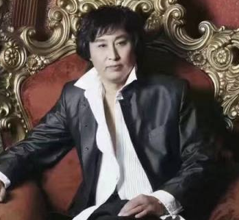

俞福均
俞福均、绍兴市工艺美术大师 ，绍兴工匠，绍兴市首批乡村振兴“领雁计划”人才。浙江省优秀民间文艺人才。非物质文化遗产项目刀画绍兴市市级代表性传承人。
李钟
生于1958年，自幼酷爱绘画艺术，11997年得到家人真传，后拜师刀画大师林宝君先生为师，辗转全国各大城市，饱览祖国各大名川大山，为刀画创作增添色彩，作品《旭日东升》《金蟾望日》深爱广大艺术爱好者的喜爱和赞美，
石德成
石德成，男，出生于四川宜宾，宋记刀画第三代嫡系弟子，非遗刀画传承人师，师承刀画创始人宋万清之子宋俊杰，毕业于吉林农业大学，现任中国宋记刀画艺术研究院院长
，逐梦刀画创始人，央视力推80后“国之巨匠”，中国最年轻的工艺美术大师，中国工艺美术协会理事，中国刀画研究会理事，成都市温江区刀画协会会长，中国刀画第三代嫡系传人，刀画“7S”教学系统研创，成都市美术家协会会员、成都市温江区政协常委。
王砚方
自青年时期酷爱画展艺术，经过自己多年的努力与刻苦学习，在中国艺术刀画中有着独特的创意，发挥了自己的才智，为中国艺术刀画曾添了美丽的图画与新的篇章。王砚方中国创新艺术研究推广中心主席，2006年7月任北京市刀画艺术委员会理事。超写实画派创始人；世界艺术家协会高级创作员，高级书画家。先后毕业于上海戏剧学院美术系油画专业；中央工艺美术学院研究生班。
